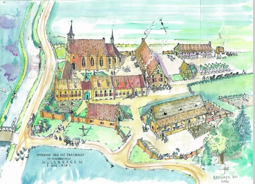

Beweeg omhoog Beweeg omlaag Rood Groen Zwart Comic Verdwijn/Verschijn Afbeelding Op In/uitfaden Sourcecode toggle Een mooi gedicht Denkend aan Holland, Zie ik brede rivieren Traag door oneindig laagland gaan 